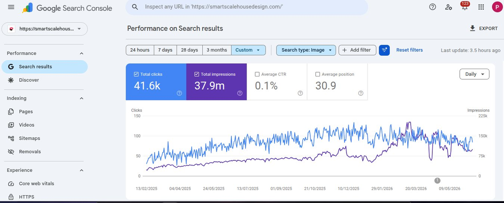
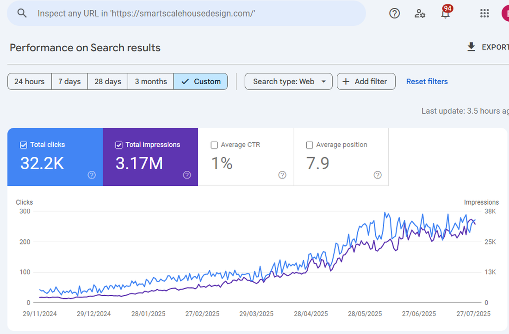
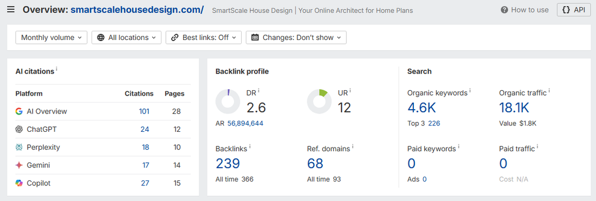
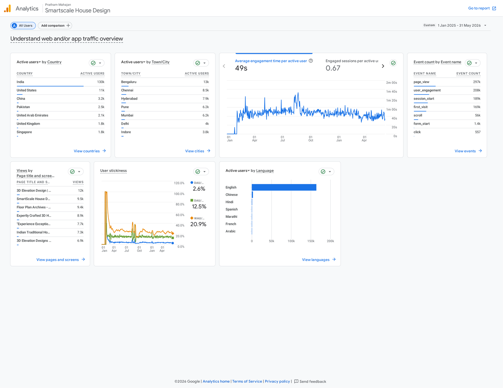
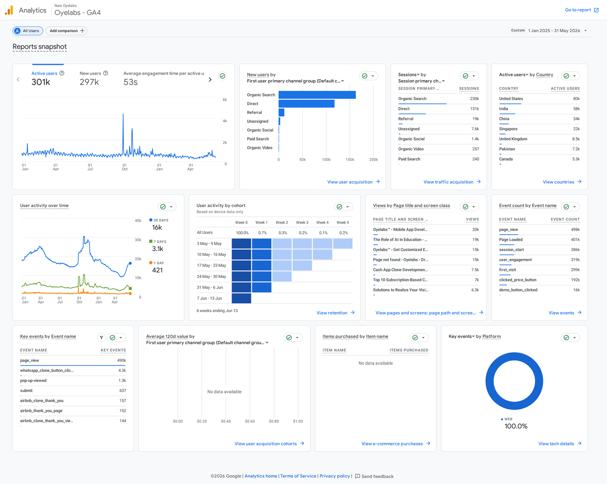

Two years deep in technical SEO, content strategy, and Generative Engine Optimization (GEO) for B2B tech and architecture brands. Below is the actual dashboard data - not estimates - from the accounts I run.
Most "SEO" still optimizes for 2019. I build content and technical structure that ranks in classic search results - and gets cited directly inside AI Overviews, ChatGPT, Perplexity, Gemini, and Copilot.
Audits, crawl-error fixes, schema markup, internal linking, meta optimization, Core Web Vitals - the foundation everything else stands on.
Keyword mapping from real user intent - People Also Ask, related searches, bottom-of-page suggestions - turned into long-form, semantically structured content.
Structuring content so AI systems can quote it: question-based headings, direct answers, tables, and fact-dense formatting that earns citations in AI Overviews, ChatGPT, Gemini, Perplexity and Copilot.
Ongoing diagnosis of traffic, indexing status, audience behaviour, and conversion events - so every content decision is backed by data, not guesswork.
In-article and sidebar CTAs, lead qualifier forms, and WhatsApp / contact integrations designed to turn blog readers into form-fills.
Paid campaigns run alongside organic growth, with ROAS tracking and reporting to keep spend accountable to revenue.
An online architectural design firm with low organic traffic, almost no keyword rankings, and zero backlinks. Over a two-year engagement, I built their entire SEO and content system from scratch - and ran Meta Ads in parallel - without ever buying a single backlink.



| Platform | Pages | Citations |
|---|---|---|
| Google AI Overview | 28 | |
| Copilot | 15 | |
| ChatGPT | 12 | |
| Perplexity | 10 | |
| Gemini | 14 |

No backlink campaign was ever run on this domain. Rankings, traffic, and AI citations were earned entirely through keyword mapping built from real user queries - People Also Ask, related searches, and bottom-of-page suggestions - paired with semantically structured, fact-dense content written to match how AI engines extract and quote information.
A B2B MVP app development brand competing for high-intent "clone app" and on-demand startup queries - a category where AI tools are increasingly the first stop for founders researching what to build. End-to-end on-page SEO, GEO, and lead-gen content.

| Event | Count |
|---|---|
| clicked_price_button | 192K |
| demo_button_clicked | 16K |
| whatsapp_clone_button_click | 4.3K |
| pop-up-viewed | 1.3K |
| submit (form) | 637 |
Top 10 Google rankings achieved for:
Cited directly in AI responses (ChatGPT / AI Overview) for:
Top countries by active users: United States (80K), India (58K), China (34K), Singapore (22K), United Kingdom (8.5K) - a genuinely global B2B audience built almost entirely on organic and GEO content for a category most agencies still target with paid ads alone.
Pick a starting point - most engagements start with an audit, then move into a content and technical roadmap.
Full technical and content audit using Semrush, Ahrefs, GSC, and GA4 to find what's blocking rankings, indexing, and traffic.
Long-form, semantically structured articles built around real user-intent keywords, formatted for both classic SEO and AI citation.
Structure existing and new content so AI Overviews, ChatGPT, Gemini, Perplexity, and Copilot can find, trust, and cite it.
Category audits, service-tag cleanup, description rewrites, and post calendars to dominate local map and "near me" search.
GA4 and Search Console setup, event tracking for lead signals, and recurring reports tied to business outcomes - not vanity metrics.
Paid campaigns run alongside organic growth, with ROAS tracking so every rupee spent is accountable to pipeline.
Every engagement starts the same way: find out exactly what's broken or missing, then fix the highest-leverage things first.
Full technical SEO audit, GA4/GSC review, competitor analysis, and keyword gap mapping. You get a prioritized list of issues and opportunities.
Resolve crawl errors, canonical issues, schema markup, and on-page meta optimization. Set up or clean up GA4 event tracking for leads.
Keyword-mapped content calendar built from real user intent. First long-form pieces published, structured for both search engines and AI citation.
First indexing and ranking signals reviewed. Reporting dashboard delivered. Roadmap adjusted based on what's actually moving.
Send over your domain and I'll put together a short audit - indexing status, keyword gaps, and where the quickest wins are.